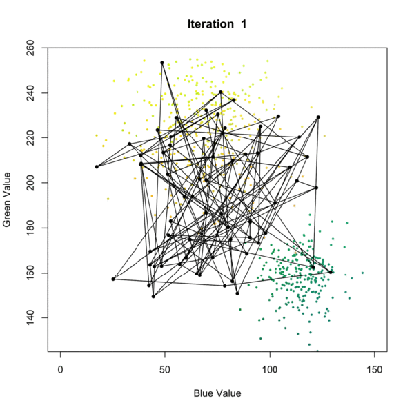

“Highly motivated towards data science and wanted to work in an industry where I can learn & practice my Analytic, Visualization, and Machine learning skills to improve business decisions and Human values.”
Python, Java, R, Go, MATLAB, SQL, MongoDB, HTML, CSS, JavaScript
Machine Learning: Numpy, Pandas, Scikit learn, NLTK, OpenCV, PyTorch, TensorFlow
Tableau (dashboard, analytics), PowerBI, Orange
Spark, Hadoop, HDFS, HBase, Hive
AWS (sagemaker, lambda, EC2, EMR, S3), GCP
Git, GitFlow, Jira, Linux, Shell, Bash


This Deployment Project is about IMDB Movie review Sentiment Analysis and Classification with XGBoost Algorithm using AWS Services such as Sagemaker, S3, Lambda function, and Amazon API gateway. So, what is you sentiment today?, check it here.

Solved Business Problem for Instakart by forecasting purchasing patterns, departmental performance, and future human resource requirements based on a Company portfolio of 200,000 active customers and 30,000,000 orders

Reviewed and classified positive and negative sentiments using simple Neural Network, feture extraction and reduce Noise by Hypothesis tesing, improved model performance by 22%.

Analyzed 6,362,620 banking transactions, successfully classified anomaly data and identified fraudulant transaction. Predict scenario and transaction type for major fruad. Used XGBoost ML algorithm for transaction classification.

Conducted Observation Project to identify the effect of Feature Selection on Machine Learning Performance. Worked on SVM, KNN, Decision Tree Models and observe effect of UDFS, LLCFS , CFS feature selection methods. Used 10 fold validation, Accuracy, Precision-Recall, and complexity as evaluation parametes.

Created Tableau interactive dashboard using Canada's bankruptcy data -2014. Used Province wise, Industry wide analysis with gender and age filteraton mehtod. Derived safest group criteria for loan recovery. Visit my Tableau Profile

Created Tableau interactive dashboard using Canada's bankruptcy data -2014. Used Province wise, Industry wide analysis with gender and age filteraton mehtod. Derived safest group criteria for loan recovery. Visit my Tableau Profile

Calculated IR distribution, pending and paid loan amount, remaining durations, the monthly interest rate for two durations (15 and 30 years). Used DAX (data analysis expressions) for PowerBI calculations. Generated graphical representation for loan amount distribution over tenure.

Capstone Project under IBM Specialization - Defined business problem, worked on data gathering from different APIs and website, data integration, proper data preparation, and applied KNN machine learning algorithm for predicting Price for home, also observed basic criteria for house price incresase. Generated business proposals, presentation and final reports for stakeholder.

Conducted an academic project, based on a research paper on Survey missing data imputation. Identified different data mining methods for missing data imputations. Worked on 16 datasets with different error-rate and successfully impute all missing values using SOM (Self Organizing Map) algorithm. Evaluated model with NRMS and AE methods with an acceptable tolerance limit.